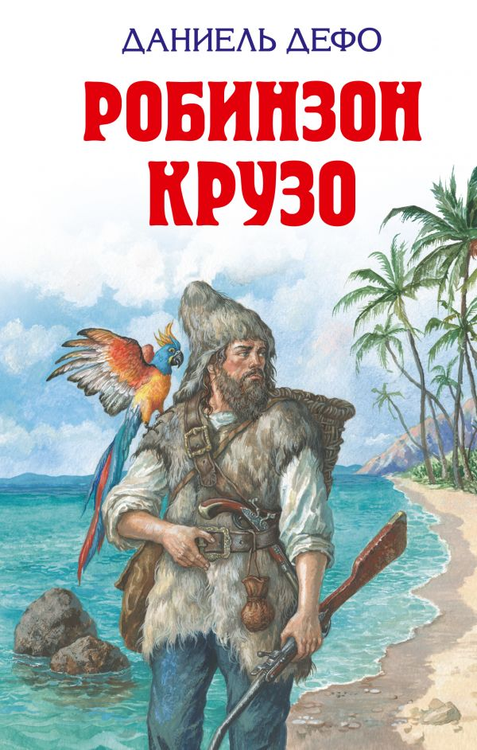
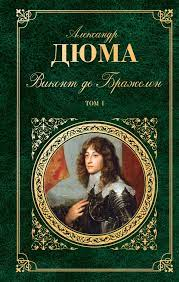
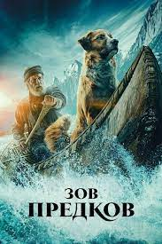

BooksТоп 3 Популярных книг конца XVIII и середины XIX1) Робинзон крузо«Робинзо́н Кру́зо» (англ. Robinson Crusoe) — роман английского писателя Даниэля Дефо (1660—1731), впервые опубликованный в апреле 1719 года, повествующий о нравственном возрождении человека в общении с природой и обессмертивший имя автора. Написан как автобиография морского путешественника и плантатора Робинзона Крузо, желавшего ещё более разбогатеть скорым и нелегальным путём, но в результате кораблекрушения попавшего на необитаемый остров, где провёл 28 лет. Сам Дефо называл свой роман аллегорие. 2) Виконт де бражелон«Виконт де Бражелон, или Десять лет спустя» (фр. Le Vicomte de Bragelonne ou Dix ans après) — роман французского писателя Александра Дюма, третья часть трилогии романов о трёх мушкетёрах и д’Артаньяне. Описываются события, происходящие через десять лет после событий описанных в книге «Двадцать лет спустя». Была написана в 1847—1850 годах. «Виконт де Бражелон» сам по себе представляет трилогию, каждый из трёх томов по объёму вполне сравним с «Тремя мушкетёрами». 3) Зов предков«Зов предков» (англ. The Call of the Wild) — повесть американского писателя Джека Лондона, опубликованная в 1903 году. Повесть относится к ранним работам Джека Лондона. Часто её классифицируют как детскую литературу, так как главным действующим героем является пёс. Однако зрелость и глубина идей повести делает её актуальной и для взрослых читателей. В повести затрагиваются такие темы, как выживание сильнейших, цивилизация и природа, судьба, свобода воли и отчасти насилие, особенно над животными Конец топа |